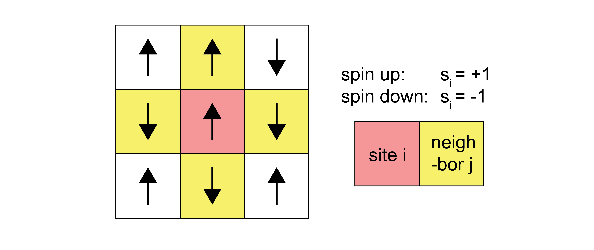
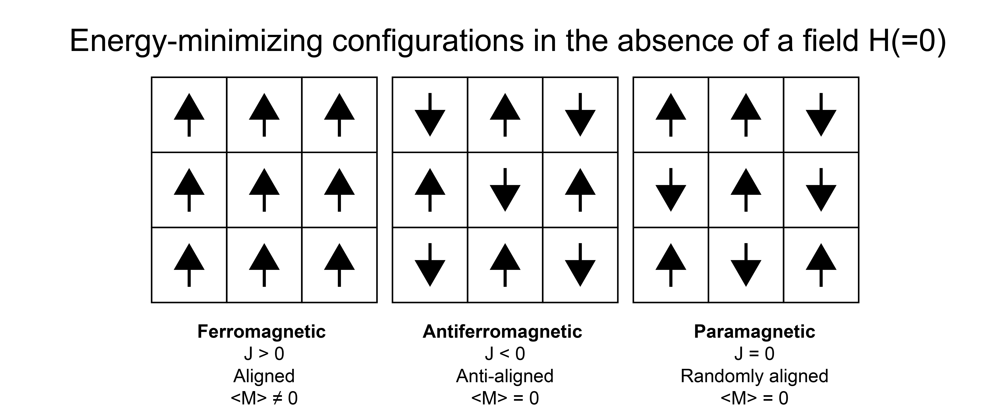

The Ising model#
Additional Readings for the Enthusiast#
Chandler [1] 5.1
Goals for today’s lecture#
How does including a simple set of particle interactions change our partition function?
When might we spontaneously switch from one phenomenological behavior to another? What is this called?
Defining the Ising model#
We finished our derivation of the ideal gas partition function and used it to derive well-known thermodynamic expressions (such as the ideal gas of equation of state). We also derived a Langmuir adsorption isotherm following a similar procedure. In both of these cases, we neglected interactions between molecules. The approximation that molecules do not interact is severely limiting and makes it impossible to analyze most condensed phase systems, such as liquids, or examine phase transitions, which fundamentally depend on the strength of intermolecular interactions.
In general, studying particles with interactions is very challenging, leading to very few problems for which exact analytical solutions exist. This difficulty emerges because interactions between particles lead to correlations between particle configurations; the partition function can no longer be factorized into independent single-particle partition functions because the energy of one particle depends on the configuration of the others. In this lecture, we will focus on a simple type of lattice model - resembling lattice models we have treated previously - to illustrate how interactions affect many-body systems and to introduce a common approximation for studying these systems.
The system we will consider consists of a set of \(N\) magnetic spins placed on a lattice, to represent a magnetic system. The lattice can be of various dimensions and geometries (e.g. 2D square or hexagonal). Each spin can either be up or down; we denote the value of spin \(i\) as \(s_i = 1\) for spin up and \(s_i = -1\) for spin down. The lattice may also be in the presence of magnetic field, \(H\), that tends to align spins with the field. The energy of a single configuration of this system is:
\(\mu\) is the magnetic moment (not to be confused with the chemical potential). Each microstate of the system refers to a particular set of spins - that is a set of values of \(s_1=\pm 1, s_2=\pm 1\dots\), which we will denote as \(\{s_i\}\). In Problem Sets 1 and 2, we already looked at the behavior of a system of non-interacting spins in which the latter term in Eq. (21) is ignored. Here, we will consider what happens when we incorporate these interactions.

A simple model for the interaction energy is to assume that only nearest-neighbor spins on the lattice interact, and that this interaction can be described by a coupling constant \(J\). A pair of spins contributes energy \(-J\) to the system if they are aligned, and a pair of spins contributes energy \(J\) to the system if they are oppositely aligned. The total energy of the system is then:
Here, \(\sum_i\) runs over all spins, while \(\sum_j^\prime\) is only over the nearest-neighbor spins of spin \(i\), indicated by the \(\prime\) symbol. The negative sign in front of the \(J\) is because the product of \(s_i s_j\) is positive for aligned spins, but the energy between aligned spins is negative. Because the outer sum runs over all spins while the inner sum runs over all neighbors, the interaction between spin \(i\) and \(j\) will be counted twice - once when considering the neighbors of spin \(i\), and once when considering the neighbors of spin \(j\). We divide by 2 to remove this overcounting of interactions (this is often a confusing point that is neglected by some authors in their treatment of this model). The total magnetization is:
This expression for the energy of a set of spins on a lattice is referred to as
- Ising model#
A landmark model within statistical mechanics that incorporates particle interactions by assuming that the alignment of neighboring spins on a 2D lattice contributes to the total energy.
Magnetic states and spontaneous magnetization#
A particular quantity of interest for magnetic systems is the ensemble-average magnetization, \(\langle M \rangle\). In the problem sets, we studied \(\langle M \rangle\) as a function of the external field, \(H\), but a system can also exhibit spontaneous magnetization if \(\langle M \rangle \ne 0\) in the absence of a field (\(H = 0\)).
The spontaneous magnetization of the Ising model is determined by the value of the coupling constant, \(J\). If \(J > 0\), then at equilibrium the lowest-energy configuration would lead to the alignment of all spins and there would be a finite magnetization in the absence of a field. We call this system ferromagnetic. Conversely, if \(J < 0\) and spins align in alternating orientations, the spins would be ordered but there would be no net magnetization. We call this system antiferromagnetic. Finally, if \(J=0\) and spins are randomly oriented in the absence of a field, we call the system paramagnetic. This case is the non-interacting case studied in the problem sets.

Does aligning the spins increase or decrease the entropy of the system?
Click for answer
Aligning spins reduces the entropy of the system. For example, consider a case when \(J \gg 0\) and all spins are in the same direction. The system can only have two possible microstates - all spins are up, or all spins are down. In contrast, a disordered alignment of spins would have many more possible configurations.
There is thus a trade-off between entropy and energy in systems for which \(J\ne 0\). Consider a ferromagnetic system (\(J>0\)) at constant \(NVT\), with \(H=0\) and finite \(T\). At equilibrium, the Helmholtz free energy of this system must be at a minimum. Writing \(F=E-TS\), the system can switch between a low energy state, in which spins align due to the positive value of \(J\), or a high entropy state, where spins are randomly aligned.
- order-disorder transition#
a phenomenom in a thermodynamic system wherein the system spontaneously switches from having order to having none, or vice versa
- Curie-temperature#
the temperature at which an order-disorder transition occurs in magnetic systems
Therefore, there should be a temperature at which there is an order-disorder transition and the magnetization changes from zero (at high temperature) to a non-zero value (at low temperature) due to the energetic interactions between spins. This transition pccurs at the Curie temperature, \(T_C\), for this magnetic system, and will now study its origin.
However, it is important to note that while we are strictly deriving this order-disorder transition temperature for a magnetic system, this transition is analogous to phase transitions in other systems, such as the liquid-gas phase transition. For example, instead of treating a series of spins that are up or down, we could use the Ising model to represent a series of particles that are of one type or another (e.g., to represent the mixing of two types of liquid-phase molecules; this is called the lattice gas model) which would lead to similar behavior.
Computing thermodynamic variables of the Ising model#
To determine the Curie temperature, we need to relate the ensemble-average magnetization of the system to the temperature. As our system can be described by the canonical ensemble (if we include the magnetic work term as part of the energy function, as done above), our first step will be write an expression for the canonical partition function. Using the expression for the energy, the canonical partition function for the Ising model is:
\( Z = \sum_{s_1=\pm 1} \sum_{s_2=\pm 1} \dots \sum_{s_N =\pm 1}\exp \left (\beta \sum_i^N \mu H s_i + \beta \frac{J}{2} \sum_{i}^N \sum_j^\prime s_i s_j \right )\)
Show derivation
The last expression explicitly sums over all possible configurations of the \(\{s_i\}\), where for each set of spins the energy is defined by summing over that set. This partition function is much more complex than the versions we’ve seen to date since we cannot factorize it in any obvious way due to interactions between spins. It should thus be apparent why systems with interactions are challenging to solve analytically.